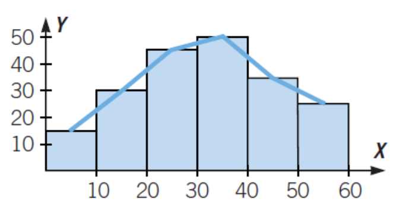

El estudio estadístico es el proceso mediante el cual se recogen, organizan y analizan datos para obtener conclusiones. Los estudios pueden realizarse sobre toda una población o una muestra de ella.
La población es el conjunto total de elementos sobre los que se realiza el estudio. La muestra es un subconjunto de la población que se selecciona para ser estudiada. Los resultados obtenidos de la muestra se utilizan para hacer inferencias sobre toda la población.
1 Queremos realizar un estudio estadístico de la talla de calzado que usan los alumnos de 3ºESO de un instituto.
2 Señala en qué caso es más conveniente estudiar la población o una muestra.
3 Este es el titular de un periódico. «EL PESO MEDIO DE LOS ESPAÑOLES ES 69 KG.»
Las variables estadísticas son las características o cualidades que se estudian en una población. Pueden ser cualitativas o cuantitativas, dependiendo de si representan atributos o cantidades.
Las variables cuantitativas pueden ser discretas (valores enteros, como el número de hermanos) o continuas (pueden tomar cualquier valor dentro de un rango, como la altura). Las cualitativas pueden ser ordinales (con un orden) o nominales (sin orden).
5 Indica si las siguientes variables estadísticas son cualitativas o cuantitativas:
6 De las siguientes variables cuantitativas, indica cuáles son discretas y cuáles continuas:
7 Clasifica las siguientes variables en cualitativas y cuantitativas discretas o continuas:
La frecuencia absoluta es el número de veces que aparece un valor en un conjunto de datos. La frecuencia absoluta acumulada es la suma de las frecuencias absolutas hasta un valor determinado.
La frecuencia relativa es el cociente entre la frecuencia absoluta de un valor y el total de datos. La frecuencia relativa acumulada es la suma de las frecuencias relativas hasta un valor determinado.
8 El color de pelo (M = moreno, R = rubio, P = pelirrojo) de 30 personas es:
M R P M M M M R R P P M M M M M M P R R R P M M M M R M M M
Construye su tabla de frecuencias.
9 El número de horas diarias que trabajan con el ordenador 30 personas es:
3 4 0 5 5 3 4 5 0 2 2 5 3 2 0 1 2 2 1 2 0 3 1 2 1 1 2 1 4 3
Cuando las variables son continuas, es común agrupar los datos en clases o intervalos. La marca de clase es el punto medio de cada intervalo y se utiliza para representar el valor promedio de los datos en ese intervalo.
14 Los resultados de un test de inteligencia realizado a 20 personas han sido:
100 80 92 101 65 72 121 68 75 93 101 100 102 97 89 73 121 114 113 94
Obtén la tabla de frecuencias, tomando intervalos de amplitud 10.
15 Los pesos (en kg) de 24 personas son: 68,5 34,2 47,5 39,2 47,3 79,2 46,5 58,3 62,5 58,7 80 63,4 58,6 50,2 60,5 70,8 30,5 42,7 59,4 39,3 48,6 56,8 72 60
16 ¿Por qué los intervalos en las tablas son cerrados por un lado y abiertos por el otro?
17 Las estaturas (en cm) de 28 jóvenes son:
155 178 170 165 173 168 160 166 176 169 158 170 179 161 164 156 170 171 167 151 163 158 164 174 176 164 154 157
Forma una tabla con intervalos, efectúa el recuento y obtén las marcas de clase.
13 ¿Qué ocurre si la suma de las frecuencias absolutas no es igual al número total de datos?
21 En un edificio de 16 vecinos, el número de televisores por vivienda es:
0, 1, 1, 2, 1, 3, 2, 1, 1, 1, 2, 2, 3, 0, 3, 2
22 En un aparcamiento público hay 25 coches rojos, 19 amarillos, 39 plateados, 50 blancos, 27 verdes, 30 azules y 10 negros.
23 Haz los gráficos del ejercicio anterior con las frecuencias relativas. ¿Qué observas?
26 La longitud (en cm) de 18 grillos es:
1.8, 1.9, 2, 2.4, 2.6, 2.8, 1.7, 1.9, 2.3, 1.6, 2.1, 3, 2.3, 2.7, 2.9, 1.5, 1.8, 2.6
27 El peso (en kg) de 20 mochilas de estudiantes es: 4,2 – 3,8 – 5,1 – 4,5 – 3,9 – 4,7 – 5,3 – 4,8 – 4,1 – 5,0 3,7 – 4,6 – 5,2 – 4,3 – 4,9 – 3,6 – 5,4 – 4,0 – 4,4 – 3,5
30 Haz la tabla de frecuencias que corresponde a este histograma.
Las medidas de centralización nos ayudan a resumir un conjunto de datos en un solo valor que represente el centro o la tendencia central de los datos. Las más comunes son la media, la mediana y la moda.
La media aritmética es el valor promedio de un conjunto de datos. Se calcula sumando todos los valores y dividiendo entre el número total de valores. La fórmula es:
\(\overline{x} = \frac{\sum_{i=1}^{n} x_i}{n}\)
La mediana es el valor que deja el mismo número de datos por encima y por debajo de él cuando los datos están ordenados. Si hay un número impar de datos, la mediana es el valor central. Si hay un número par de datos, la mediana es la media de los dos valores centrales.
La moda es el valor que más se repite en un conjunto de datos. Es posible que un conjunto de datos tenga más de una moda (si varios valores se repiten el mismo número de veces) o que no tenga moda (si ningún valor se repite).
32 Calcula la media, la mediana y la moda del número de suspensos de 15 alumnos. Interpreta el resultado:
4, 1, 0, 4, 1, 4, 1, 2, 3, 0, 2, 4, 0, 3, 1
35 Las estaturas (en cm) de 24 alumnos de 3.° ESO son:
158, 160, 168, 156, 166, 158, 160, 168, 168, 158, 156, 164, 162, 166, 164, 168, 162, 158, 156, 166, 160, 168, 160, 160
36 Añade un valor que no haga variar la mediana.
18, 8, 7, 9, 12, 15, 21, 12
37 Calcula los cuartiles de este conjunto de datos que expresan los días de baja laboral sufridos por 10 trabajadores.
0, 2, 3, 4, 2, 1, 1, 0, 0, 3
38 Se han convocado unas oposiciones en las que hay 50 plazas y se han presentado 200 personas. Estos son los resultados:
| Notas | 3 | 4 | 5 | 6 | 7 | 8 | 9 | 10 |
|---|---|---|---|---|---|---|---|---|
| Opositores fi | 6 | 25 | 34 | 42 | 50 | 24 | 13 | 6 |
40 La anotación de dos jugadores de baloncesto en los últimos cinco partidos ha sido:
41 Las longitudes (en mm) de una muestra de tornillos son las siguientes. Calcula sus medidas de dispersión utilizando las marcas de clase.
| Intervalo | [13, 14) | [14, 15) | [15, 16) | [16, 17) |
|---|---|---|---|---|
| fi | 8 | 7 | 2 | 3 |
42 Las notas obtenidas por un alumno en cinco exámenes han sido: 3, 8, 5, 7 y 4, y las de otro alumno: 2, 9, 4, 5 y 7. ¿En qué alumno es mayor la dispersión?